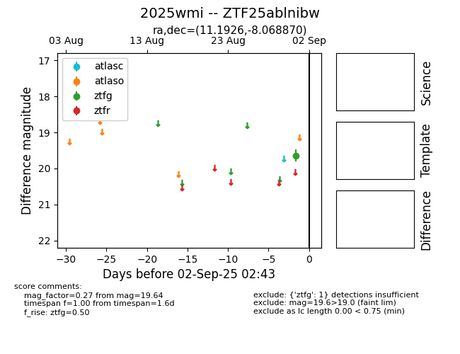

FINK: ZTF25ablnibw
Lasair: ZTF25ablnibw
ALeRCE: ZTF25ablnibw
TNS: 2025wmi
YSE: 2025wmi
ZTF25ablnibw (ztf,fink)
2025wmi (tns,yse)
equatorial (ra, dec) = (11.1926,-8.06887)
galactic (l, b) = (117.8889,-70.87530)

last ztfg=20.03, ztfr=20.03
6 ztfg, 4 ztfr detections